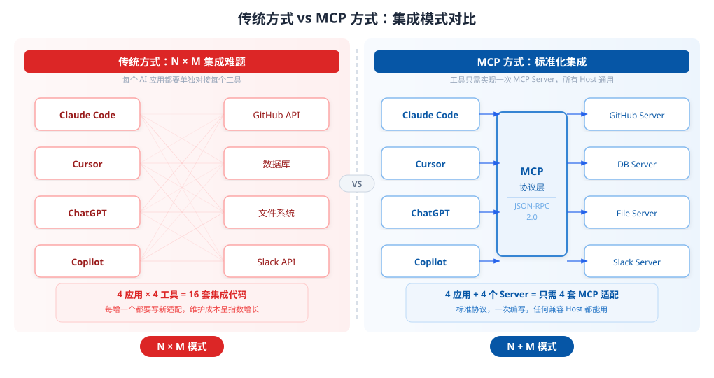
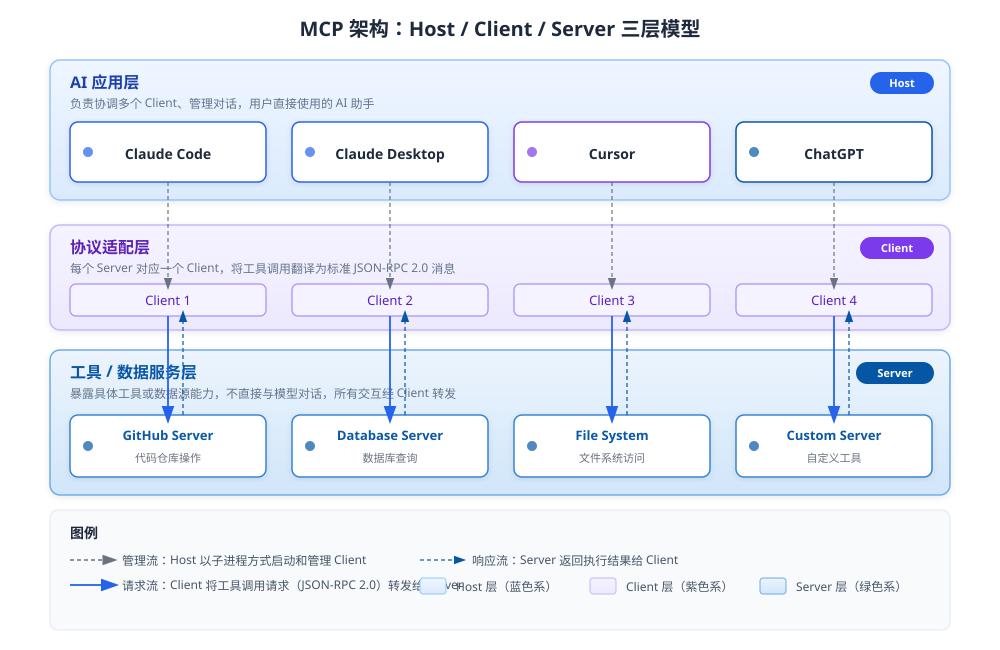
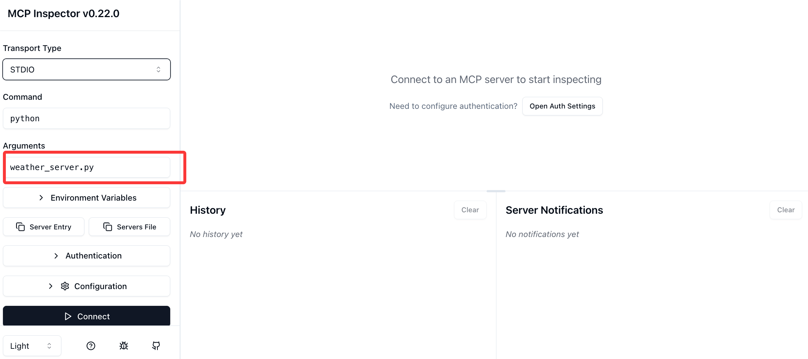
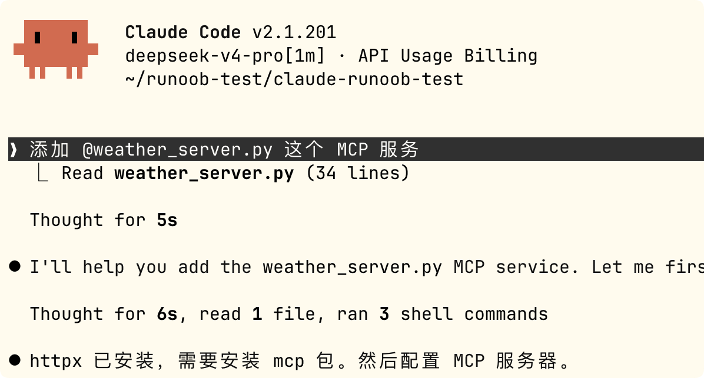
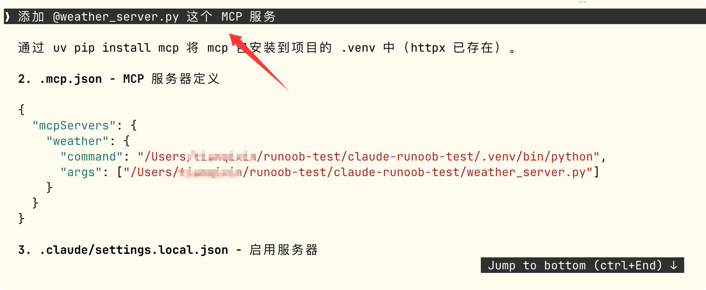
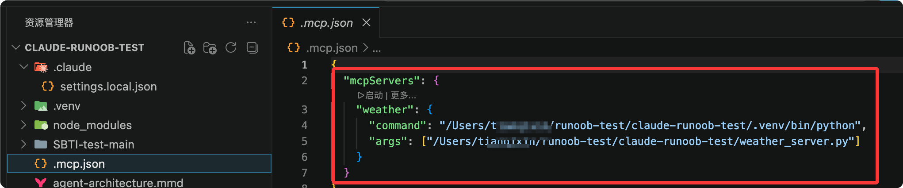
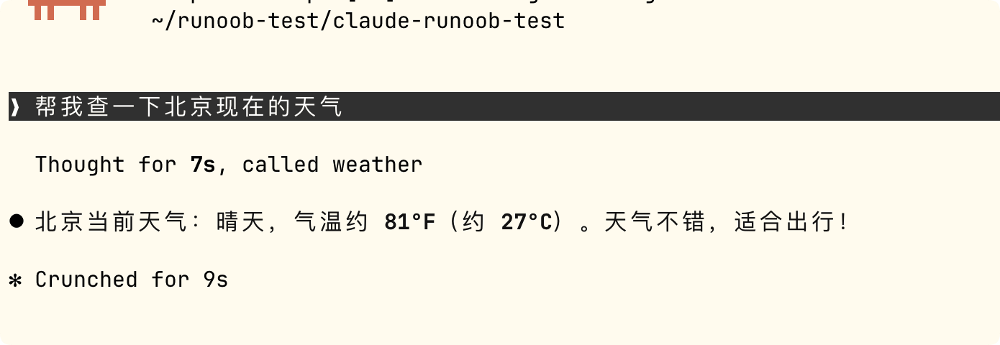

MCP入門チュートリアル
MCPの英語正式名称はModel Context Protocol（モデルコンテキストプロトコル）で、AIアプリケーションと外部ツール・データソース間の接続方法を標準化するためのオープン標準プロトコルです。
MCPはUSB-Cのように、異なるデバイスが同じインターフェースで接続できるようにするものです。

MCP登場以前は、新しいツール（GitHub、Slack、データベースなど）を接続するたびに、各AIアプリケーションが個別に統合コードを書く必要があり、いわゆるN×M統合問題（N個のAIアプリ × M個のツール = N×Mセットのコード）。
MCP登場後は、ツール提供側が標準に従ってMCP Serverを1つ作るだけで、MCPをサポートするあらゆるAIアプリケーションが直接利用でき、次のようになります。1セットのServer + すべてのHostと互換。
下図は、従来のN×M統合とMCP標準化統合の違いを直感的に示しています：

MCPは2025年12月にAnthropicからLinux Foundation傘下のAgentic AI Foundation（AAIF）に寄贈され、業界共通のオープン標準となりました。OpenAI、Blockなどのベンダーが共同でガバナンスに参加しています。
発展のタイムライン
| 時期 | マイルストーン |
|---|---|
| 2023年以前 | OpenAIがfunction callingやChatGPTプラグインフレームワークを発表したが、いずれもベンダー独自形式であり、単一プラットフォームに縛られていた |
| 2024年11月 | AnthropicがMCPを公開。モデル非依存・ベンダー中立で、あらゆるモデルが同じServerを利用可能 |
| 2025年3月 | OpenAIが正式にMCPサポートを発表 |
| 2025年中頃 | Streamable HTTP転送、OAuth 2.1認可、Elicitation（情報照会）などの機能が追加され、MCPは本番級のリモートサービスへと進化 |
| 2025年12月 | プロトコルのガバナンス権がAAIF（Linux Foundation）に移管され、複数ベンダーによる共同運営段階に入る |
| 2026年 | コアがステートレス化へと進化し、Tasks（長時間タスク）、MCP Apps（対話型UI）などの拡張機能が追加 |
コアアーキテクチャ：Host / Client / Server
MCPはLSP（Language Server Protocol、エディタがプログラミング言語を統一的にサポートするためのプロトコル）の設計思想を参考に、3つの役割を定義しています：
| 役割 | 説明 | 例 |
|---|---|---|
| Host（ホスト） | ユーザーが直接使用するAIアプリケーション。複数のClientを調整し、対話を管理する | Claude Code、Claude Desktop、Cursor、ChatGPT |
| Client（クライアント） | Host内部のコンポーネント。特定のServerと1対1の接続を維持し、モデルのツール呼び出しリクエストを標準プロトコルメッセージに変換する | HostはServerに接続するたびにClientを1つ作成する |
| Server（サーバー） | 標準プロトコルの層で包み、特定のツールやデータソースの機能を公開する。大モデルと直接対話しない | GitHub API Server、データベースServer、ファイルシステムServer |
3層アーキテクチャの関係は下図の通りです：

基盤となる通信は統一してJSON-RPC 2.0メッセージ形式を使用し、異なる役割間のやり取りの標準化を保証します。
MCP通信フローの詳細解説
「ユーザーがAIに天気を調べさせる」を例にすると、1回の完全なツール呼び出しのプロセスは次の通りです：

フローは7つのステップに分かれます：
- ユーザーが質問する：ユーザーがHost（例：Claude Code）に「北京の天気を調べて」と入力する。
- モデルが判断する：Hostに組み込まれた大モデルが問題を分析し、天気予報クエリツールを呼び出す必要があると判断して、呼び出し意図をClientに送信する。
- プロトコル変換：Clientがツール呼び出しリクエストをJSON-RPC 2.0形式のメッセージに変換し、対応するServerに送信する。
- Serverが実行する：Serverはリクエストを受信した後、実際の操作（天気APIの呼び出し、データベースのクエリなど）を実行する。
- 結果を返す：Serverは結果をJSON-RPC形式でClientに返す。
- モデルに渡す：Clientが結果をHostに返し、モデルが回答に組み込めるようにする。
- ユーザーに回答する：モデルがツールから返されたデータと自然言語を統合し、最終的な回答を出力する。
このフロー全体を通じて、Serverは大モデルの存在をまったく認識しません。JSON-RPCメッセージだけを処理するのです。これはMCPがモデル非依存を実現するための重要な設計です。
三大核心プリミティブ
MCP Serverは外部に3種類の機能を公開できます。これを「プリミティブ」（Primitive）と呼びます：
| プリミティブ | 定義 | 代表的なシナリオ |
|---|---|---|
| Tools（ツール） | 実行可能なアクション。モデルが主体的に呼び出せ、副作用（データ書き込み、メッセージ送信など）を伴う | メール送信、チケット作成、データベースクエリ実行、ファイル操作 |
| Resources（リソース） | 読み取り専用データ。モデルがコンテキストとして読み取るもので、実行は伴わない | ログファイルの内容、データベーステーブルのスナップショット、APIドキュメント |
| Prompts（プロンプトテンプレート） | 事前に作成された再利用可能なプロンプトテンプレート。ユーザーやアプリケーションが直接呼び出せる | 「この契約書の重要条項をまとめて」、「このコードのパフォーマンス問題を分析して」 |
さらに、2つの高度なメカニズムがあります：
- Sampling（サンプリング）：Serverが逆にHostのモデルにコンテンツ生成を依頼でき、役割が入れ替わります。
- Elicitation（情報照会）：Serverが実行中に情報不足に気づいた場合、ユーザーに積極的に追質問できます。例：「どの日付で絞り込みますか？」
最初はToolsとResourcesを重点的に理解すれば十分です。Prompts、Sampling、Elicitationは後で使うときに学んでも遅くありません。
転送方式
MCPは2つの転送方式をサポートしており、異なるシナリオに適しています：
| 転送方式 | 適用シナリオ | 特徴 |
|---|---|---|
| stdio（標準入出力） | ローカルツール。Hostが子プロセスとしてServerを起動する | 最もシンプルでネットワーク設定が不要。個人PC上のローカルツールに適している |
| Streamable HTTP | リモート本番環境。ServerをHTTPSサービスとしてデプロイする | 並行接続・水平スケーリングに対応し、OAuth 2.1と組み合わせて認証を行う |
個人の学習やローカル開発ではstdioで十分です。
エンタープライズ級、複数人での共有が必要なシナリオではStreamable HTTP。
本チュートリアルのデモケースはすべてstdio方式を採用しています。
安全上の注意
MCPはAIにコード実行や実システムへのアクセス能力を与えるため、セキュリティ規範が特に重要です：
- ツールの説明自体を信頼しない：信頼できるServerからのものでない限り、機能説明が悪意を持って改ざんされている可能性があります（プロンプトインジェクションリスク）。Hostはツールの説明に対して警戒を怠ってはいけません。
- 明示的なユーザー同意が必須：機密性の高い操作を黙って実行してはいけません。毎回のツール呼び出しはユーザーの確認を経るべきです。
- 本番環境での防御強化：ServerはOAuthリソースサーバーとしてデプロイし、TLS暗号化、アクセス制御、ログ監査を組み合わせるべきです。
- サードパーティServerは審査が必要：使用前にソースの信頼性を確認し、必要に応じてサンドボックス隔離を行います。
実践デモ：Claude CodeでMCP Serverを接続する
以下、2つの完全なケースを通じて、MCP Server の作成方法と、Claude Code に接続して使用する方法を紹介します。
最初のケースは Python を使用して天気照会サービスを作成し、2つ目のケースは Node.js/TypeScript を使用して ToDo 管理を作成します。
ケース1：Python天気予報クエリServer
目標：天気照会ツールを提供する MCP Server を作成し、Claude Code から呼び出します。
環境準備
pip install mcp httpx
2つの Python パッケージをインストールする必要があります：mcpは MCP 公式 Python SDKで、httpxHTTP リクエストを送信して天気 API を呼び出すために使用します。
Server コードを作成する
ファイルを作成するweather_server.py：
インスタンス
from mcp.server.fastmcp import FastMCP
import httpx
# "weather" という名前の MCP Server インスタンスを作成します
# FastMCP は高レベルな API を提供し、Server 開発を簡素化します
mcp = FastMCP("weather")
@mcp.tool()
async def get_weather(city: str) -> str:
指定された都市の現在の天気を照会します。
Args:
city: 都市名。中国語または英語に対応。例："Beijing" または "上海"
"""
# wttr.in の無料天気 API を使用します。API Key の登録は不要です
# format パラメータで返却形式を指定します：%C=天気状況, %t=気温
url = f"https://wttr.in/{city}?format=%C+%t"
async with httpx.AsyncClient() as client:
resp = await client.get(url, timeout=10)
resp.raise_for_status()
return f"{city} の現在の天気：{resp.text.strip()}"
@mcp.resource("weather://cities/supported")
def supported_cities() -> str:
"""現在照会可能な都市のリストを返します（読み取り専用リソースの例）。"""
return "Beijing, Shanghai, Guangzhou, Shenzhen, Hangzhou, Chengdu, サンプル"
if __name__ == "__main__":
# stdio トランスポートを使用し、Claude Code が子プロセスとして呼び出せるようにします
mcp.run(transport="stdio")
コードの説明：
- @mcp.tool()：関数を Tool として登録します。モデルの docstring は自動的にツールの説明として大規模モデルに提供され、モデルがいつ呼び出すべきかの判断に役立ちます。
- @mcp.resource()：関数を Resource として登録します。モデルが必要に応じて読み取るためのもので、「実行」ではなく「参照」のみです。
- mcp.run(transport="stdio")：標準入出力を介して Host と通信します。ローカルツールで最も一般的な方法です。
ローカルデバッグ（任意ですが推奨）
Claude Code に接続する前に、まず MCP 公式 Inspector ツールで Server をデバッグし、正常に動作することを確認します：
npx @modelcontextprotocol/inspector python weather_server.py
実行後、Web デバッグインターフェースが自動的に開き、Server が公開している Tool と Resource を確認し、手動で呼び出してテストできます。

毎回、まず Inspector による一連のデバッグフローを実行し、実際の AI アシスタントに接続する前にコードの問題を調査することをお勧めします。調査時間を大幅に節約できます。
Claude Code で MCP Server を構成する
方法1：AI に直接追加させる
Claude を直接起動できます：
claude
以下の情報を入力して、Claude に自分で構成・追加を任せます：
添加 @weather_server.py 这个 MCP 服务

この方法が最も簡単で、プロンプト情報を入力するだけで、構成や依存関係も自動的に完了します。

現在のディレクトリの .mcp.json ファイルに構成情報が自動生成されたことを確認できます：

構成が完了したら、Claude Code で直接質問します：
北京の現在の天気を調べてください

自分であれこれ試したい場合は、コマンドでの追加やファイル構成も使用できます。
方法2：コマンドラインで追加
コマンドとファイルのパスは自分で修正する必要があることに注意してください：
claude mcp add weather python /Users/サンプル/サンプル-test/weather_server.py
このコマンドの意味：
- claude mcp add：Claude Code の MCP 管理サブコマンド。
- weather：この MCP Server に名前を付けます。後で使用します。claude mcp list確認できます。
- python：Server を起動するコマンド。
- /Users/.../weather_server.py：Server スクリプトの絶対パス。
追加が成功したら、以下のコマンドで接続中の MCP Server を確認できます：
claude mcp list
出力例：
NAME STATUS COMMAND weather active python /Users/サンプル/サンプル-test/weather_server.py
特定の Server を削除する場合：
$ claude mcp remove weather
方法3：構成ファイル（チーム共有に適しています）
プロジェクトのルートディレクトリに作成する.mcp.jsonファイル：
{
"mcpServers": {
"weather": {
"command": "python",
"args": ["/Users/サンプル/サンプル-test/weather_server.py"]
}
}
}
保存後、Claude Code を再起動（またはプロジェクトを開き直す）すると、構成がすぐに有効になります。
構成ファイル方式の利点は、Git リポジトリにコミットでき、チームメンバーがプロジェクトをクローンした後に自動的に同じ MCP Server 構成を取得できることです。
ユーザーレベルの MCP Server を構成した場合（~/.claude/mcp.json に保存）、すべてのプロジェクトで有効になります。プロジェクトレベルの .mcp.json は現在のプロジェクトでのみ有効です。
実際の使用
構成が完了したら、Claude Code で直接質問します：
> 北京の現在の天気を調べてください
Claude Code は自動的に以下を行います：
- weather Server の get_weather ツールを呼び出す必要があることを認識します。
- 承認確認ダイアログを表示し、呼び出しを許可するかどうかを確認します。
- 同意をクリックすると、Server を呼び出して天気データを取得します。
- 結果を自然言語の回答としてまとめます。
これがモデルから現実世界のデータへの完全なクローズドループです。
ケース2：Node.js/TypeScript Todo（タスク管理）Server
JavaScript/TypeScript エコシステムにより詳しい場合は、以下が Node.js バージョンの MCP Server の例です。
環境準備
npm install @modelcontextprotocol/sdk zod
Server コードを作成する
ファイルを作成するtodo_server.ts：
インスタンス
import { McpServer } from "@modelcontextprotocol/sdk/server/mcp.js";
import { StdioServerTransport } from "@modelcontextprotocol/sdk/server/stdio.js";
import { z } from "zod";
// MCP Server インスタンスを作成し、名前とバージョン番号を設定します
const server = new McpServer({
name: "todo-list",
version: "1.0.0"
});
// 配列で ToDo ストレージをシミュレートします（実際のプロジェクトではデータベースに置き換え可能）
const todos: string[] = [];
// 最初の Tool を登録：ToDo を追加
server.tool(
"add_todo", // Tool 名
"ToDo を1件追加", // Tool の説明（モデルはこれに基づいて呼び出しのタイミングを判断します）
{
// パラメータスキーマ。Zod を使用して定義し、JSON Schema を自動生成します
item: z.string().describe("ToDo の内容")
},
async ({ item }) => {
todos.push(item);
return {
content: [{
type: "text",
text:`追加しました："${item}"、現在合計 ${todos.length}件の ToDo`
}]
};
}
);
// 2番目の Tool を登録：すべての ToDo を一覧表示
server.tool(
"list_todos",
"すべての ToDo を一覧表示",
{}, // パラメータなし
async () => {
const text = todos.length
? todos.map((t, i) => `${i + 1}. ${t}`).join("\n")
: "現在、ToDo はありません";
return {
content: [{ type: "text", text }]
};
}
);
// stdio トランスポートを使用して Server を起動します
const transport = new StdioServerTransport();
await server.connect(transport);
Claude Code への接続方法は Python バージョンと完全に同じです。
Claude を直接起動できます：
claude
以下の情報を入力して、Claude に自分で構成・追加を任せます：
添加 @todo_server.ts 这个 MCP 服务
その後、会話で「ToDo を1件追加して：サンプル チュートリアルを購入」と言うと、Claude Code が add_todo ツールを呼び出します。
既存エコシステム：すべてを自分で書く必要はない
MCP が公開されて以来、コミュニティは 500 を超える公開 Server をリリースしており、大多数の一般的なシナリオをカバーしています：
| カテゴリ | 既存の MCP Server の例 |
|---|---|
| コードホスティング | GitHub、GitLab、Bitbucket |
| インスタントメッセージング | Slack、Discord |
| クラウドストレージ | Google Drive、OneDrive |
| データベース | PostgreSQL、MySQL、SQLite、MongoDB |
| Web 自動化 | Puppeteer、Playwright |
| ナレッジ管理 | Notion、Obsidian |
| ファイルシステム | Filesystem（ローカルファイルの読み書き） |
公式 SDK は以下のプログラミング言語をカバーしています：TypeScript、Python、C#、Java、Swift。
実際の開発では、ほとんどのシナリオで既存の Server をそのまま使用すれば十分です。社内システムやプライベートデータベースに接続する場合にのみ、MCP Server を自分で作成する必要があります。
よくある質問
| 質問 | 回答 |
|---|---|
| MCP は Function Calling を置き換えるのでしょうか？ | いいえ。Function Calling はモデルがツールを呼び出すための基盤メカニズムであり、MCP はこのメカニズムの外側に標準化されたプロトコルをまとったもので、異なるベンダーのモデルが同じツール定義を使用できるようにします。両者は「標準化」であり「置き換え」ではありません。 |
| 1つの Server を複数の AI アプリケーションで同時に使用できますか？ | はい、これこそが MCP の核心的な価値です——Server を一度書けば、MCP 互換の Host（Claude Code、Claude Desktop、Cursor、ChatGPT など）ならどこでも使用できます。 |
| MCP を使用するにはコードを書く必要がありますか？ | 他人が作成した MCP Server を使用するだけなら、コードを書く必要はまったくありません——Claude Code で claude mcp add コマンドを使用して構成するだけです。自分の Server を開発する場合にのみ、コードを書く必要があります。 |
| stdio と Streamable HTTP はどう選ぶ？ | 個人使用・ローカルツールは stdio（ゼロ設定）、チーム共有・本番展開は Streamable HTTP（HTTPS と OAuth の設定が必要）を選択。 |
参考資料
- 公式ドキュメント：https://modelcontextprotocol.io
- 公式仕様：https://modelcontextprotocol.io/specification
- 公式 GitHub（各言語の SDK と参考実装を含む）：https://github.com/modelcontextprotocol
- MCP プロトコル：https://www.example.com/np/mcp-protocol.html
- デバッグツール Inspector：npx @modelcontextprotocol/inspector